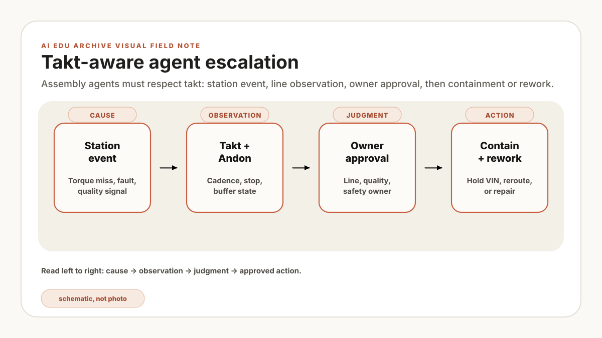
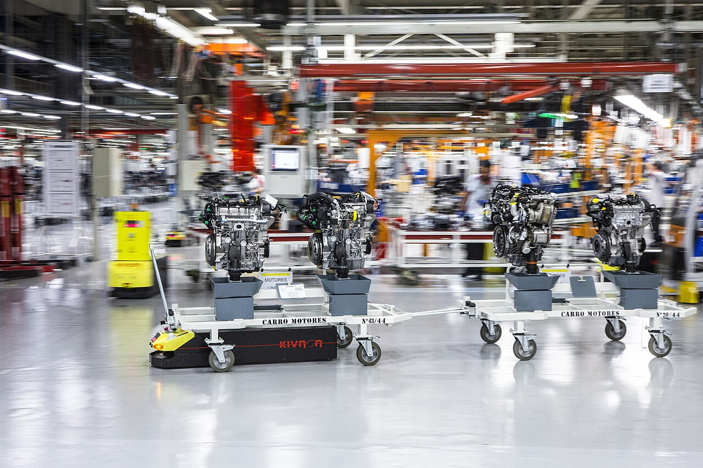
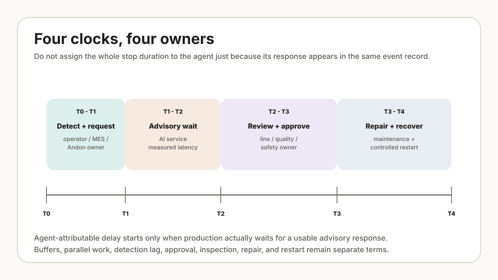

Write four clocks on the architecture review board. Demand cadence sets takt. The station reports observed cycle time. The AI service has advisory latency. The PLC and safety design has deterministic response requirements. If a proposed agent action cannot be assigned to the right clock and owner, it is not ready for the line-support queue.
What takt-aware means
Demand cadence is available production time divided by required units. It is a planning target, not a PLC deadline. Advisory latency runs from an agent request to a usable recommendation. PLC and safety response belongs to validated control and safety functions; an LLM is not in that loop. Attributable delay is only the portion of a stop or slowdown caused by waiting for the advisory response after accounting for detection, operator handling, approval, maintenance, and recovery.
A takt-aware agent classifies response urgency, risk, owner, and approval path. It may summarize evidence during an event, but line control, interlocks, emergency stops, and safe-state transitions remain in their engineered PLC or safety systems.

{kind=link}
A constructed station review starts from a five-minute agent response recorded beside five minutes of lost production. The event timeline changes that reading: two minutes elapsed before the request was sent, and another four minutes went to approval, inspection, and restart. Only the measured wait for a usable advisory response can be attributed to the agent, and even that estimate must account for buffers and parallel work. The snag is a clock-definition error, not proof of agent impact.

Separate cycle loss from agent-attributable delay
Start with the observed advisory wait, then estimate only the share that actually blocked production after accounting for buffers and parallel work.
Example values, not plant measurements. “Share that blocked production” is an assumption to challenge against the event timeline, buffer state, and parallel work. This simplified model excludes recovery, breaks, starvation, station interaction, and delay from detection, approval, repair, and restart. It is not an OEE forecast or proof that the agent caused the full event duration.
| Class | Time posture | Typical action | Owner |
|---|---|---|---|
| Immediate | Current takt window | Escalate Andon, summarize evidence, call owner. | Line leader or supervisor. |
| Near-term | Current shift | Prepare containment list, compare station windows, draft handover note. | Quality and production. |
| Planned stop | Next break or planned downtime | Recommend robot-cell inspection or tool check. | Maintenance and automation. |
| Engineering | After stabilization | Analyze patterns, update control plan, prepare 8D evidence. | Quality engineering. |
The wrong agent design
The wrong design is an agent that can answer broad questions but has no concept of station state, line cadence, or authority. It might say, "Stop the line and inspect affected vehicles," without knowing whether that suggestion is already covered by a control plan, whether the line leader approved it, or whether the suspected VIN range is even correct.
A controlled first pilot should read evidence, summarize, classify urgency, identify owners, and draft actions. Any enabled write route needs a separate authorization, payload review, audit event, expiry, and recovery test.
An agent should not stop or restart a line. It can assemble evidence and route a recommendation; the named production, quality, maintenance, or safety owner acts through the approved control path.
Tool lanes
Separate tools into lanes. This keeps the agent useful without making it reckless.
| Lane | Examples | Default permission |
|---|---|---|
| Read-only evidence | MES station events, Andon history, robot logs, torque results, vision results. | Allowed with audit log. |
| Knowledge retrieval | Work instruction, control plan, FMEA, troubleshooting guide, past 8D. | Allowed with citation. |
| Draft action | Containment list, shift handover, QMS issue draft, maintenance request draft. | Allowed, not submitted. |
| Write action | Open QMS issue, assign containment, request hold, schedule robot inspection. | Approval required. |
| Physical action | Robot motion, safety bypass, line stop/restart. | Not exposed to the agent identity; verify the block in integration tests. |
Approval gates
Automotive agents need named approval gates, not vague "human review." The approval owner depends on the action:
- Line owner: takt, manpower, station blocking, Andon escalation.
- Quality owner: containment, defect disposition, rework rule, customer risk.
- Safety owner: robot zone, interlock, maintenance mode, human entry.
- Maintenance or automation owner: robot program, fixture, tool calibration, PLC/robot recovery.
- Process or manufacturing engineer: recurring pattern, control plan update, long-term corrective action.
The agent should produce an approval card: evidence, suspected scope, proposed action, affected VIN range, risk if delayed, rollback path, and owner. The card supports a decision; it does not transfer accountability to the model.
Choose a recorded training event and assign its four clocks, response class, evidence sources, approver, allowed tool lane, and fallback path. Pass: the agent can produce the same scoped card on replay, stays within the approved advisory-latency target, and exposes missing evidence instead of filling gaps. Stop: hold the pilot when urgency has no owner, a write payload cannot be previewed, or the fallback depends on the agent being available. Limit: this test evaluates routing and evidence handling, not PLC response, functional safety, or projected line output.
Starter manifest
Start with one use case: station delay plus quality signal. Keep the tool surface small.
takt_aware_agent_manifest:
scope:
line: "final-assembly-1"
stations: ["torque-220", "vision-310"]
response_classes: ["immediate", "near_term", "planned_stop", "engineering"]
read_tools:
- mes_station_events
- andon_history
- torque_results
- vision_results
- work_instruction_search
- control_plan_search
draft_tools:
- containment_note_draft
- shift_handover_draft
- maintenance_request_draft
write_tools:
- qms_issue_create
- containment_assignment
hard_blocks:
- robot_motion_command
- safety_bypass
- line_restart
approval_fields:
- owner
- evidence
- affected_vin_range
- risk_if_delayed
- rollback_pathThe manifest is a starting contract, and its hard_blocks still need integration tests that confirm those tool routes are unavailable to the agent identity. For the operating follow-through, read the manufacturing AI agent incident-response runbook and rehearse what happens when a retrieval, approval, or tool boundary fails.